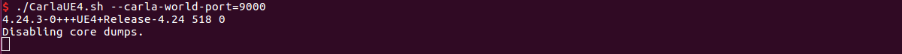
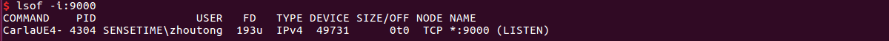

Installation¶
Prerequisites¶
System version:
Ubuntu 16.04, 18.04
Windows 10
Python version: 3.6, 3.7
PyTorch version: >=1.4, <=1.8
DI-engine version: >=0.3.1
Hardware requirements: NVIDIA GPU with at least 4GB memory if you with to run Carla server
Get and install DI-drive¶
First get and download the official repository with the following command line.
git clone https://github.com/opendilab/DI-drive.git
You can also look up tags and checkout corresponding historical version.
Install DI-drive
# install for use
# Note: use `--user` option to install the related packages in the user own directory(e.g.: ~/.local)
pip install . --user
# install for development(if you want to modify DI-drive)
pip install -e . --user
# install for automatically add MetaDrive simulator
pip install '.[metadrive]' --user
DI-drive uses DI-engine —— distributed Reinforcement Learning system to train and evaluate RL agent. If any questions raised when install DI-engine, please follow DI-engine installation for help. Or try to install manually via PyPI:
pip install di-engine --user
DI-drive supports both Carla and MetaDrive. If you want to use Carla, refer to the next section.
If you want to use MetaDrive, you can install DI-drive like above, or manually install via pip.
pip install metadrive-simulator --user
Note
You can configure the simulator used by DI-drive in core/__init__.py .
Only related modules will be imported in each file. By default all simulators are used.
Additional Installation for Carla¶
Download and install Carla Python API¶
DI-drive uses Carla simulator version higher than 0.9.9. It is needed to install Carla Python API from their released pack. If you have any problem dealing with Carla, we record some common problem you may meet in the FAQ page.
download Carla released pack
wget https://carla-releases.s3.eu-west-3.amazonaws.com/Linux/CARLA_0.9.10.1.tar.gz
mkdir carla_0910
tar -xvzf CARLA_0.9.10.1.tar.gz -C carla_0910
install Carla Python API
# install compiled Carla 0910 python api, then you can import Carla in python scripts
cd PythonAPI/carla/dist
easy_install --user carla-0.9.10-py3.7-linux-x86_64.egg
check import
python -c 'import carla'
Then everything will be ok if no error raised.
Run Carla server¶
To use Carla simulator you need to run a Carla server and use its IP host and port to connect to it.
run a Carla server
cd carla_099
# Ubuntu
./CarlaUE4.sh --carla-world-port=N
# Windows
CarlaUE4.exe --carla-world-port=N
N is the rpc port of Carla server, the default data port is N + 1. You will see:
You can check whether Carla server is running or not:
lsof -i:N
If running successfully, you will see:
Now you can use DI-drive to run code under this server.